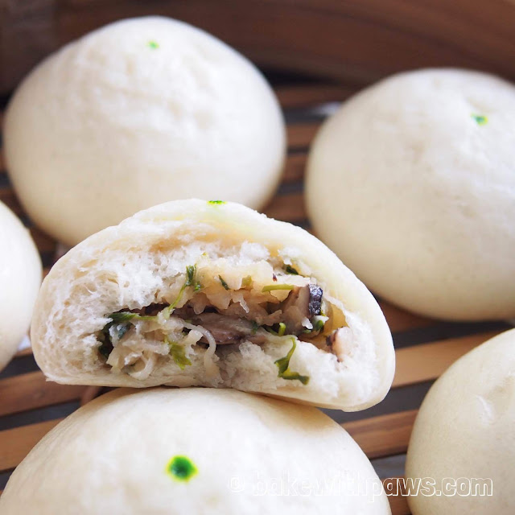

Vegetable Bun
(야채 호빵 )

Vegetable Bun (야채 호빵 ) is a warm snack that is sold throughout South Korea
Ingredients
- 1 - Cup Ground Beef (½ lb)
- 1 - Cup Cabbage
- ½ - Cup Onion
- ½ - Cup Green Onions
- ¼ - Cup Carrot
-
Seasoning Ingredients:
- 1 - Tbsp Oyster Sauce
- 2 - Pinches Salt
- 2 - Pinches Black Pepper
- 1 - Generous tsp Korean Curry Powder
- 1 - tsp Cooking Oil
-
Dough Ingredients:
- 2½ - Cups All Purpose Flour
- 1 - Cup Warm Water
- 2 - Tbsp Sugar
- 1 - Tbsp Butter
- 2¼ - tsp Active Dry Yeast
- 1 - tsp Baking Powder
- 1 - tsp Salt
Steps
- Start by making the dough. Let the dough set while preparing the filling ingredients.
- Julienne 1 cup of cabbage and 1/4 cup of carrot. Finely chop ½ cup each of onion and green onions.
- Prepare 1 cup of ground beef. You can also use ground pork, chicken, or turkey.
- Fry the ground meat with 2 pinches salt, 2 pinches black pepper, and 1 Tbsp oyster sauce for about 5 minutes on medium-high.
- After 5 minutes, add all the chopped vegetables to the meat.
- Season the filling ingredients with 1 generous tsp of Korean curry powder. Then, fry it for 5 more minutes on medium-high. The curry powder is the secret ingredient for this recipe.
- After 5 minutes, divide the filling into 8 portions.
- Divide the dough into 8 portions and form each piece into a ball.
- Alternatively, if you want to go the easy route, try Pillsbury Buttermilk Biscuit dough.
- Open the biscuits container to find 8 pieces of dough ready to use.
- Cut 8 sheets of parchment paper into about 3 x 3 inch squares.
- You can either steam or bake these. Roll out each ball of dough into a 4 inch circle if you are going to steam them, or a 3 inch circle if you are going to bake them. The dough should be about ⅛ of an inch thick.
- Put each divided portion of the filling into the center of each piece of dough.
- Wrap the filling with the dough and seal it.
- Gently roll the bun with your hands to make the surface smooth and round. If you are going to steam the buns, place them on the parchment paper.
- Use the same process for the rest of the buns.
- Place the buns in the steamer and put the steamer on a pot with some boiling water.
- Cover the pot, but keep one side a little open. By doing this, the surface of the hobbang can be steamed beautifully without being wrinkled. Steam the buns for about 15 minutes on high.
- After 15 minutes, turn off the heat and let them cool down for a few minutes before you open the lid and take out the buns.
- If you want to bake the buns, preheat your oven to 325 degrees F. Make 8 buns with the biscuit dough and put the buns on a cookie sheet.
- Bake the buns for about 25 to 30 minutes, or until the surface becomes nice golden brown.